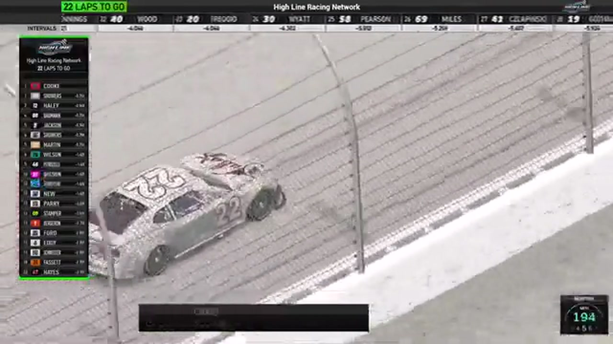

Craig Martin
Team assignment not stated in the structured owner record.
A PODIUM FILE WITH AN OPEN RESULT HORIZON
- Official files
- 4
- Central editions
- 0
- Exact tape cues
- 5
- Accepted podiums
- 1
Craig Martin has 1 position-specific top-three receipt: S1 R7 at Michigan (P2). No feature win is currently supported in the accepted result ledger. A consistently stated team affiliation remains open for owner review. The currently indexed source window runs from December 29, 2025 through February 22, 2026.
The official tape index connects the name to 4 race files, 0 Central editions, and 5 primary-broadcast navigation cues. The densest direct-tape categories are restart (2 cues) and stage (1 cue). Those counts describe where the name is easiest to find; they are not fault, pace, or performance grades. A source-attributed car frame is published with its original video and timestamp. That is the current discovery map for Craig Martin.
That is enough for a real result dossier without pretending the archive knows every start or finish. Owner classifications can extend the record later through the same stable race IDs. Separately, 2 Highline Live files sit on the bonus shelf and never enter the official season ledger. The displayed name is labeled broadcast lower third confirmed; that status remains visible so an owner roster can strengthen or correct the identity without rewriting the evidence trail. Those boundaries define Craig Martin's public HLRN file.
5 featured race-tape cues
These are discovery routes into complete HLRN broadcasts, not performance grades or inferred results.
- S1 / R7 · RESULT
Randy Showers is confirmed atop the Michigan results
The primary Michigan results readout records Randy Showers first, Craig Martin second, and Brandon Hinton third.
Michigan - S1 / R8 · STAGE
Nick Bowman takes Talladega Stage 1 through an early wreck
Cars begin spinning as lap 20 arrives, but Nick Bowman reaches the Stage 1 line first. The scheduled caution follows while HLRN restarts its timing display and prepares the next pit cycle.
Talladega - S1 / R7 · INTERVIEW
Randy Showers tells the winner's side
S1 / R7 at 2:05:17: Randy Showers, Craig Martin, and Brandon Hinton join the HLRN booth for a first-person race account. The interview is preserved as context and does not create a placement claim outside the accepted result ledger.
Michigan - S1 / R7 · RESTART
Nick Bowman and Craig Martin bring Michigan back to green
S1 / R7 at 1:47:25: Nick Bowman, Craig Martin, Matt Brown, and James Smith are in the booth's front-pack call as Michigan returns to green. The cut keeps the restart launch and the first lap of lane development together.
Michigan - S1 / R7 · RESTART
Logan Wilson and Craig Martin bring Michigan back to green
S1 / R7 at 1:52:40: Logan Wilson, Craig Martin, Randy Showers, and Brandon Hinton are in the booth's front-pack call as Michigan returns to green. The cut keeps the restart launch and the first lap of lane development together.
Michigan
Verified team history is not consistently stated. Complete starts, finishes, and points remain open beyond the recovered results. The public spelling has broadcast identity support; an owner roster can still add legal-name, number, and team-history detail.